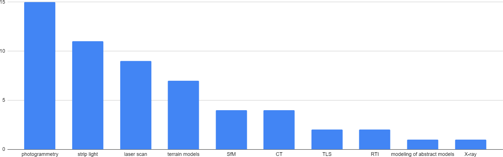

3D-Digitalisierung und Langzeitarchivierung – Umfrageergebnisse aus der NFDI4Culture Community
von Jörg Heseler, Matthias Arnold, Alexandra Büttner, und Simon Worthington
v1.0
Herausgegeben von: Arbeitsgruppe „Digitale Publikationen und Daten“ (NFDI4Culture)
Zuletzt aktualisiert: 2023-10-29
Erstellt: 2023-10-04
Sprache: German (Germany)
Erstellt von: Simon Worthington
Impressum
Veröffentlicht in Deutschland
Datum: November 2023
NFDI4Culture – Konsortium für Forschungsdaten zum materiellen und immateriellen Kulturerbe NFDI4Culture ist ein Konsortium innerhalb der deutschen Nationalen Forschungsdateninfrastruktur (NFDI).
Herausgegeben von der Arbeitsgruppe „Digitale Publikationen und Daten“ (NFDI4Culture).
Die Autoren danken allen Teilnehmenden für ihre wertvollen Beiträge und ihr Engagement bei dieser Umfrage. Ihre Einblicke werden dazu beitragen, die Zukunft der 3D-Digitalisierung und -Langzeitarchivierung von Kulturerbeobjekten weiter voranzutreiben. Zudem danken die Autoren den folgenden Kollegen für ihre hilfreichen Kommentare (in alphabetischer Reihenfolge): Eva Bodenschatz und Sabrina Herzog.
Eines der Projektziele von NFDI4Culture und speziell der Task Area Data Publication and Availability (TA4) ist die Entwicklung von Konzepten für zentrale Langzeitarchivierungsdienste zur Sicherstellung einer nachhaltigen Infrastruktur. Dabei stehen insbesondere Publikationen aus kulturellen Disziplinen mit 3D-Daten im Vordergrund. Die Entwicklung solcher Konzepte setzt die Kenntnis der Bedürfnisse der Produzierenden, Anbietenden und Verwaltenden von Forschungsdaten voraus. Zur Bedarfsermittlung wurde eine Umfrage zur Erstellung, Nutzung und Handhabung von 3D-Modellen durchgeführt, deren Ergebnisse im Folgenden diskutiert werden.
AbbildungWelcher Disziplin würden Sie sich selbst zuordnen?
Elf von zwanzig Teilnehmenden (55%) ordneten sich Disziplinen außerhalb des Kulturerbesektors zu. Davon abgesehen stellte jedoch Architektur die größte Fächergruppe dar, gefolgt von Kunst-, Medien- und Tanzwissenschaft. Musikwissenschaft war jedoch nicht vertreten.
2. Digitalisierungsmethoden

AbbildungWelche Methoden verwenden Sie, um 3D-Objekte zu digitalisieren?
Auf die Frage welche Digitalisierungsmethoden unsere Teilnehmenden verwenden, wurden fünfzehnmal Fotogrammetrie-, gefolgt von elfmal Streifenlicht- und neunmal Laserscanverfahren sowie siebenmal Geländemodelle, jeweils viermal Structure-from-Motion (SfM) und Computertomographie (CT) sowie jeweils zweimal terrestrisches Laserscanning (TLS) und Reflectance Transformation Imaging (RTI) genannt. Letztlich wurden auch jeweils einmal die Modellierung abstrakter Modelle wie etwa von Molekülen aber auch der Einsatz von Röntgen (X-ray) erwähnt.
3. Digitalisierte Objekte
AbbildungWas digitalisieren Sie?
Hinsichtlich der zu digitalisierenden Objekte war die Vielfalt in Bezug auf Größe, Material und Oberflächenstruktur bezeichnend. Häufig genannt wurden Museumsobjekte, von Töpferwaren bis zu Skulpturen aus verschiedenen Materialien wie etwa Keramik oder Metall. Weiter folgten sehr große Objekte wie Gebäude und Landschaften, die meist im Zusammenhang mit der Erfassung mittels Stand-up-Laserscannern oder Drohnen mit Fotogrammetrieverfahren genannt wurden. Letztlich wurden sehr kleine Objekte wie Insekten, Fossilien oder auch Knochen genannt, für die hauptsächlich CT- oder Röntgenverfahren verwendet wurden.
4. Metadatenschemata
AbbildungWelche Metadatenschemata verwenden Sie?
Auf die Frage nach den zur Beschreibung der physischen und digitalen Objekte verwendeten Metadatenschemata wurden zweimal das für 3D-Daten übliche XML-Schema Lightweight Information Describing Objects (LIDO) und jeweils einmal Dublin Core, Simple Knowledge Organization System (SKOS), Conceptual Reference Model of the International Council (CIDOC), DataCite, Data Catalog Vocabulary (DCAT) sowie ein Metadatenschema von Homburg et al. genannt. Vereinzelt wurden auch Datenrepräsentationsformen oder Konzepte zur Strukturierung bibliographischer Informationen genannt, auf die hier nicht weiter eingegangen werden soll. Ein Teilnehmer gab an, mit dem Begriff Metadatenschema nicht vertraut zu sein. Vier Teilnehmer gaben an, keine Metadatenschemata zu verwendeten. Sieben Teilnehmer machten keine Angaben.
5. Digitalisierungssoftware
AbbildungWelche Software (SW) verwenden Sie, um 3D-Objekte zu digitalisieren?
Bezüglich 3D-Digitalisierungssoftware (SW) nannte eine deutliche Mehrheit (72,5 %) 3D-Scan-Verarbeitungs-SW für Punktwolken oder Fotos. Allerdings waren mehr als die Hälfte dieser Anwendungen gerätespezifisch. Software zur 3D-Scananalyse, 3D-Modellierung oder Projektdokumentation wurde dagegen seltener genannt.
6. Erfassungshardware
AbbildungWelche Hardware verwenden Sie zur Erfassung von 3D-Objekten?
An Hardware zur Objekterfassung wurden Handscanner vor allem für die Erfassung kleiner bis mittelgroßer Objekte erwähnt, die mit Streifenlicht- oder Laserscanning-Methoden arbeiten. Standscanner, die mit Laserlicht arbeiten, wurden vor allem für mittelgroße bis große Objekte eingesetzt. Spiegelreflex- und spiegellose Kameras wurden ebenfalls zur Erfassung kleiner bis mittelgroßer Objekte eingesetzt, entweder zur Berechnung von 3D-Modellen mit fotogrammetrischen Verfahren oder zur Erstellung einfacher 2D-Bilder aus verschiedenen Perspektiven. Zur Erfassung von Gebäuden und Landschaften wurde der Einsatz von Drohnen genannt. Darüber hinaus erwähnte ein Befragter einen Reflectance Transformation Imaging (RTI)-Kuppelscanner.
7. Anzeigegeräte für 3D-Daten
AbbildungVerwenden Sie spezielle Hardware, um Ihre 3D-Daten anzuzeigen?
Sechs Teilnehmer gaben an, keine speziellen Geräte zur Darstellung von 3D-Daten zu nutzen. Unabhängig davon wurden viermal Virtual Reality (VR)-Brillen, darunter die Brillen Oculus Rift, Oculus Quest und HTC Vive sowie zweimal die Augmented Reality (AR)-Brille Microsoft Hololens erwähnt. Auch ein Apple iPad-Tablet und ein MultiTouch-Tisch wurden jeweils einmal erwähnt.
8. 3D-Formate
AbbildungMit welchen 3D-Formaten arbeiten Sie für die Digitalisierung, Präsentation oder digitale Langzeitarchivierung?
Die für uns wichtigste Frage dieser Umfrage war, welche 3D-Formate die Community für verschiedene Anwendungsszenarien, wie Digitalisierung, Präsentation und digitale Langzeitarchivierung, verwendet. Von den Teilnehmenden wurden zwölfmal Wavefront OBJ, sechsmal Stanford Polygon (PLY), jeweils viermal Filmbox (FBX) und Stereolithographie (STL), jeweils zweimal Graphics Language Transmission Format (GLTF bzw. die binäre Variante GLB) und Extensible 3D (X3D), jeweils einmal Industry Foundation Classes (IFC), Nexus (NXS bzw. die komprimierte Variante NXZ) und XYZ sowie einmal allgemein CT-Formate genannt.
9. Software zur 3D-Datenanzeige
AbbildungVerwenden Sie eine spezielle Software zur Darstellung Ihrer 3D-Daten?
Abschließend stellten wir die Frage, welche Software zur Darstellung von 3D-Daten verwendet wird. Hier wurden sechsmal MeshLab, dreimal der 3DHOP-Viewer, der auf dem Nexus adaptive 3D-Viewer basiert, sowie zweimal CloudCompare genannt. Ferner wurden jeweils einmal der RTIViewer, GigaMesh, ein Fraunhofer Viewer, GOM Inspect, Smithsonian Voyager, SketchFab und der Babylon Viewer genannt. Auch wurde einmal der kompakkt-Viewer, der auf dem Babylon.js-Framework basiert, erwähnt. Ein Teilnehmer gab an, seinen eigenen WebGL-basierten Viewer zu verwenden.
Schlussfolgerung und Ausblick
Die vorliegende Umfrage hat uns einen wertvollen Einblick in die von der Community verwendeten Formate, Geräte und Software zur 3D-Digitalisierung und -Langzeitarchivierung verschafft. Dies legt den Grundstein für weitere vertiefende Untersuchungen und Entwicklungen.
Ein erster interessanter Aspekt dieser Umfrage war die Frage nach der Verwendung von Metadatenschemata. Einerseits bleibt unklar, warum 35 % der Teilnehmenden hier keine Angaben gemacht haben: Erfassen diese keine Metadaten oder war ihnen der Begriff Metadatenschema nicht vertraut? Andererseits wurden aktuelle Metadatenschemata wie CARARE oder Extensible Metadata Platform (XMP) nicht erwähnt. Dies wirft auch die wichtige Frage auf, ob existierende Schemata für 3D-Daten unzureichend oder ungeeignet sind. Eine tiefere Untersuchung dieses Themas ist erforderlich, um die Gründe hinter dieser Feststellung zu verstehen.
Ein zweiter interessanter Aspekt war die Frage verwendeter 3D-Formate. Formate wie Extensible 3D (X3D) und Graphics Language Transmission Format (GLTF) bzw. Digital Asset Exchange (DAE) eignen sich zur Langzeitarchivierung durch ihren hohen Grad an Offenlegung, Selbstdokumentation und Aktualität besonders gut. Diese wurden jedoch nur in der Minderzahl bzw. nicht genannt. Auch wurden Formate genannt, die für eine Langzeitarchivierung nicht geeignet sind: Filmbox (FBX) ist ein proprietäres Format, was bedeutet, dass es keine offen zugängliche Formatspezifikation gibt, die die genaue Struktur einer FBX-Datei beschreibt. Sollte dieses Format in Zukunft keine breite Anwendung mehr finden, werden Langzeitarchive möglicherweise nicht in der Lage sein, eigene Tools zum Rendern oder Konvertieren von FBX-Dateien zu entwickeln. Im Falle von Nexus (NXS bzw. NXZ) ist die Verbreitung zu gering, um sicherzustellen, dass es auch in zwanzig Jahren noch Tools gibt, die dieses Format darstellen können. Ferner ist die Datenstruktur beim textbasierten Punktwolkenformat XYZ nicht eindeutig, weshalb dieses Format zum softwareunabhängigen Austausch ungeeignet ist. Das standardisierte ASTM E57-Format wäre hier eine Alternative zur Langzeitarchivierung von 3D-Punktwolken. CT-Formate wurden von uns hingegen bisher noch nicht auf deren Archivfähigkeit untersucht. Schließlich zeigten die Angaben der Teilnehmenden auch, dass wir einerseits bei der Abfrage von Formaten in weiteren Umfragen den Zweck unterscheiden und andererseits weiter auf die Vorzüge langzeitarchivfähiger 3D-Formate hinweisen müssen.
Positiv zu bewerten ist, dass über 77 % der genannten Viewer für die Anzeige von 3D-Daten Open Source sind. Negativ fällt hingegen auf, dass 55 % der verwendeten 3D-Scan-Verarbeitungssoftware gerätespezifisch ist.
Zukünftige Umfragen werden sich noch intensiver mit diesen Ergebnissen auseinandersetzen und sich neben Langzeitarchivierungszwecken auch auf spezifische 3D-Anwendungsfälle konzentrieren. Um verallgemeinernde Schlussfolgerungen zu ziehen, ist es von entscheidender Bedeutung, eine größere Anzahl von Teilnehmenden zu erreichen und deren spezifische Anforderungen besser zu verstehen.
Abschließend planen wir die Erstellung eines Leitfadens für die digitale Langzeitarchivierung von 3D-Kulturerbeobjekten, basierend auf den gesammelten Erkenntnissen und weiteren Forschungen. Dieser Leitfaden wird dazu beitragen, bewährte Praktiken in der Community zu etablieren und die Zusammenarbeit zwischen verschiedenen Akteuren im Bereich des kulturellen Erbes zu fördern.